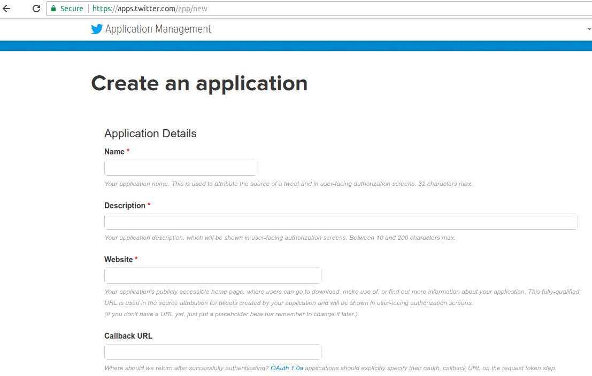
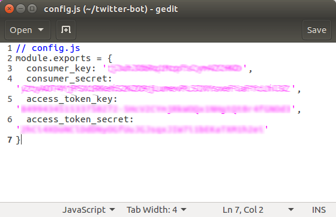
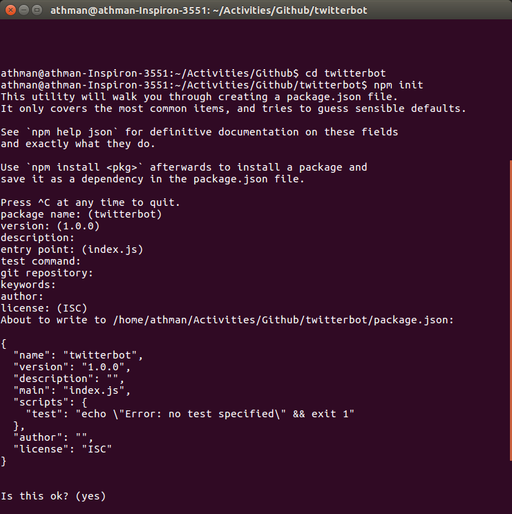
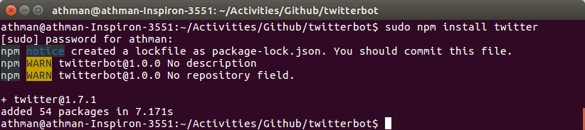
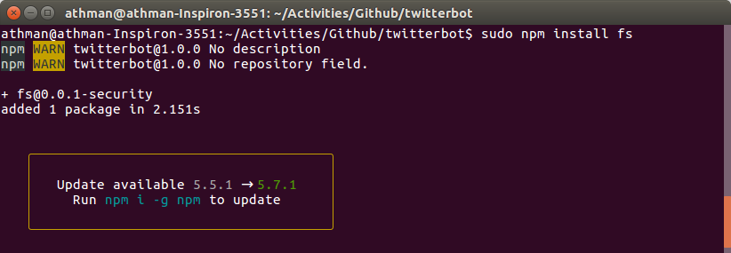

SVG "Click For More" animation for HTML pages
<svg class = "svg_animation1" expanded = "true" height = "200px" width = "200px">
<circle cx = "50%" cy = "50%" r = "35%" fill = "#ededed">
<animate attributeName="r" begin="0s" dur="1s" repeatCount="indefinite" from="25%" to="35%"/>
</circle>
<circle cx = "50%" cy = "50%" r = "25%" fill = "#808080">
<animate attributeName="r" begin="0s" dur="1s" repeatCount="indefinite" from="15%" to="25%"/>
</circle>
<circle class = "innerCircle" cx = "50%" cy = "50%" r = "15%" fill = "#000000"/>
<text x="90" y="100" fill="white" width = "30%" style="font-size: 8px;">Click</text>
<text x="85" y="110" fill="white" width = "30%" style="font-size: 8px;">For More</text>
</svg>
Output:
Tue Mar 06 2018 18:33:13 GMT+0530 (+0530)
Complements of a Number
The Complement of a number gives out a number which can sum-up to the original number and yield the digit-wise minimum or maximum number
There are two variants in doing complement of a number
1. rs Complement
2. (r-1)s Complement
| Specification | rs Complement | (r-1)s Complement | Details |
| Formula | rn - N | rn - r-m - N |
r - radix of the number N - given number n - number of digits in integer part m - number of digits in fractional part |
| Input : 2510 |
10s Complement 102 - 25 = 7510 |
9s Complement 102 - 25 - 100 = 7410 |
|
| Input : 100102 |
2s Complement 25 - 10010 = 011102 |
1s Complement 25 - 20 -10010 = 011012 |
Examples:
1. For N = 235.87710
|
10s Complement 103 - 235.877 = 1000 - 235.877 = 764.12310 |
9s Complement 103 - 235.877 - 10-3 =1000 - 235.877 - 0.001 = 764.12210
|
2. For N = 10010.011012
|
2s Complement 25 - 10010.011012 = 1000002 - 10010.011012 = 01101.100112 |
1s Complement 25 - 10010.011012- 2-5 =100000 -10010.011012 - 0.000001 = 01101.100102
|
Fri Mar 09 2018 16:18:20 GMT+0530
A Simple Twitter Bot for Quotes and Monitors
Step 1: Go to https://apps.twitter.com/ and sign in with your twitter bot account. Click "Create New App" button to get the following screen. After filling out the app details and agreeing with Twitter Developer Agreement click on the button "Create your Twitter application" to get into the app info screen

Step 2: On successful creation the following page appears and in that switch to "Keys and Access Tokens" tab
Step 3: Bot's consumer key and its secret are automatically generated and for access tokens you have to generate it by cliking on the button "Create my access token" down to that page.
Step 4: Then copy all the four values (1) Consumer key (2) Consumer secret (3) Access token key and (4) Access token secret in a new text file in the below shown format and name it as 'config.js'

Step 5: If your device is not installed with Node.js then install it by following the guidelines as per your system platform
Node.js Installation for:
Step 6: After Node.js installation make a new directory for the twitter bot and issue the command "npm init" from the command line / Terminal. Just press "Enter" to fill the default settings for the app and this will create a file "package.json" in the directory

Step 7: Then install node dependencies required for the bot ("Twitter" & "fs" modules).


Step 8: At last create the bot script as follows and save the file as "app.js". Note: In the script pls change the 'yourfile' string with the data file of yours and also include the right path to all supporting files and modules
Step 9: Thats all!!! Run the node command with a simple watch cycle or with a startup feature
Fri Mar 22 2018 15:45:20 GMT+0530